GEMS Proprietary Class: A
Direction 5117807-800, Rev# A
GEMS Proprietary Class: A |
| Required Persons | Preliminary Reqs | Procedure | Finalization |
|---|---|---|---|
| 1 | 0 min | 20 mins | 0 min |
This procedure outlines the process required to reset and set up the MultiSync LCD 1980SXi NEC 19 inch Monitor. If a system has more than one of these monitors, each must be setup. The procedure time listed above is for each monitor. An active video input signal must be connected to each monitor to perform this process.
Monitor Positioning. Explains monitor height, tilt, and swivel adjustments.
| NOTE: | For an overview on monitor front panel controls and monitor informational messages, see LCD Video Monitor Overview - NEC 1980SXi. |
| Last Revised on: | October 4, 2004 |
No tools or test equipment required.
No consumables required.
No replacement parts required.
No general safety information.
No required conditions.
Connect the 15-pin Sub-D connector cable(s) between the Operator Console’s HOST and each monitor’s blue connector INPUT 2 D-SUB. See Illustration 1.
| NOTE: | Do not use either of the two (2) manufacturer’s supplied cables. |
Illustration 1: Monitor Video Input
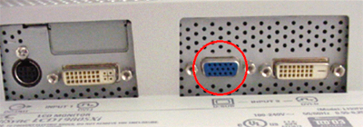
Connect the AC in line cord from the Operator Console to each monitor's rear side using the GE supplied console power cord. See Illustration 2.
| NOTE: | Do not use the manufacturer's MP6 supplied power cord. |
Illustration 2: Power Cord Connection
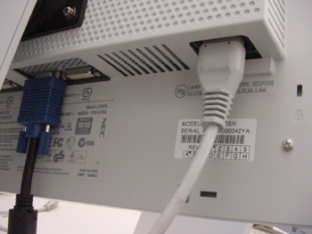
Apply power to each monitor by setting the Vacation Switch on the left side of the monitor to the ON position. See Illustration 3.
| NOTE: | The Vacation Switch is a true on/off switch. If the switch is in the OFF position, the monitor cannot be turned on using the power button. |
Illustration 3: Monitor Vacation Switch
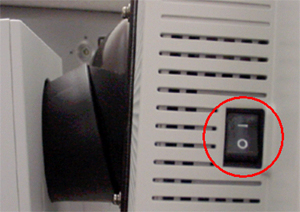
Press the front panel far right button to apply power to each monitor. Verify the green LED is illuminated. See Illustration 4.
Illustration 4: Monitor Power Button and LED

The monitor may perform an Auto Adjust referred to as the No Touch Auto Adjust function. This function is activated only when a new video signal (Analog input only) is received for the first time.
FACTORY PRESET: Selecting Factory Preset allows you to reset all On Screen Manager (OSM) control settings back to the factory settings. During this procedure, the RESET button must be held down for several seconds to take effect.
Press the > button. The initial On Screen Manager (OSM) Menu appears. See Illustration 5.
| NOTE: | If the Advanced Setup menu (Tabs 1-9 at the top) is displayed instead of the OSM menu, the monitor must be powered OFF and then ON again to exit the Advanced Setup menu mode and enable the OSM menu mode. |
Illustration 5: OSM Menu - Initial Display
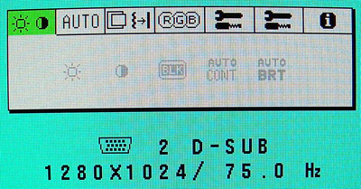
Press the > button five (5) times to highlight the Tools 2 Menu. See Illustration 6.
Illustration 6: Tools 2 Menu Highlighted
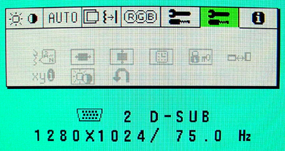
Press the SELECT/1↔2 button to enter the Tools 2 Menu. See Illustration 7.
Illustration 7: Tools 2 Menu - Initial Display
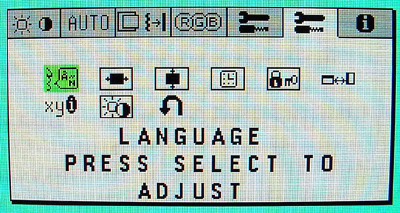
Press the < button one (1) time to highlight the FACTORY PRESET symbol. See Illustration 8.
Illustration 8: Factory Preset Symbol
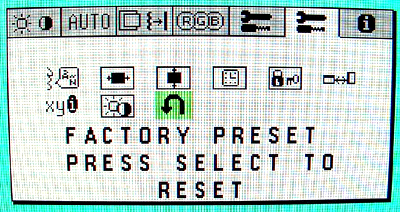
Press the SELECT/1↔2 button to enter the FACTORY PRESET Menu.
Press and hold the RESET button for three (3) seconds to perform the FACTORY PRESET. See Illustration 9.
Illustration 9: Factory Preset Reset Message
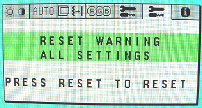
Press the EXIT button. The initial OSM Menu appears. See Illustration 5.
Press the front panel far right button (see Illustration 4) to remove power. Verify the green LED is not illuminated.
Press the front panel far right button to apply power to each monitor. Verify the green LED is illuminated. See Illustration 4.
Press the > button to display the initial OSM Menu. See Illustration 5.
Press the > button three (3) times to highlight the RGB Menu.
Press the SELECT/1↔2 button to enter the RGB Menu. The [N] may be highlighted initially. See Illustration 10.
| NOTE: | If the monitor has been already set-up the [1] may be highlighted. |
Illustration 10: Initial OSM Display - RGB Selected

Press the > button two (2) times to highlight setting 1. Verify it is 9300K. See Illustration 11.
Illustration 11: RGB Menu - Selection 1 Highlighted
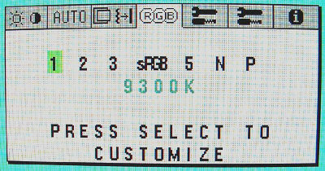
(For setting 1 at 9300K) Press EXIT twice and continue with Step 8.
(For setting 1 NOT at 9300K) If necessary, press the SELECT/1↔2 button to enter inside the setting 1 color temperature menu. Change the setting to 9300K as follows:
Press the – or + buttons as necessary to set the TEMPERATURE to 9300K. See Illustration 12.
Illustration 12: RGB Selection 1 - Temperature Adjust Menu
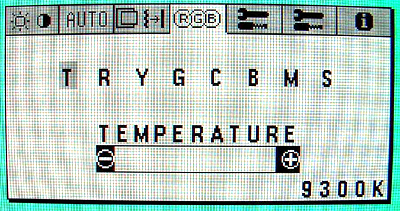
Press the EXIT button to close the Temperature Adjust Menu.
Press the EXIT button to close the Selection 1 Menu.
Press the EXIT button to close the OSM Menu.
| NOTE: | The monitor must be powered OFF and then ON again to access the Advanced Setup menu in the next section. |
Press the front panel far right button to remove power. Verify the green LED is not illuminated. See Illustration 4.
Press and hold down the SELECT/1↔2 button and, while holding this button, apply power to the monitor by holding the front panel far right button.
Release the SELECT/1↔2 button and verify the green LED is illuminated.
The Advanced Menu should be displayed. See Illustration 13.
Illustration 13: Advanced Menu - Initial Display
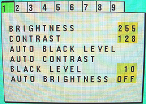
Press the > button four (4) times to highlight selection 5, GAMMA SELECTION.
| NOTE: | First time out of the box monitors will not follow the SELECT/1↔2 step. Instead, press the + button three (3) times to scroll down the Menu and then continue with the > button once to highlight CUSTOM VALUE. |
Press the SELECT/1↔2 button to enter inside the GAMMA SELECTION Menu.
Press the > button once to highlight CUSTOM VALUE. See Illustration 14.
Illustration 14: Gamma Selection Menu - Initial Factory Preset
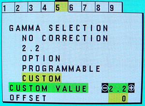
If necessary, press the – or + buttons to set the CUSTOM VALUE to 2.6 (K). See Illustration 15.
Illustration 15: Gamma Selection Menu - Final Setting
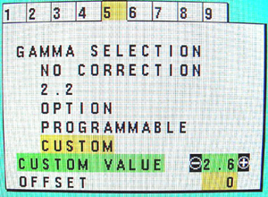
Press the EXIT button.
Press < button four (4) times to highlight Selection 1, BRIGHTNESS.
(For Brightness setting at 220) Continue with Step 12.
(For Brightness setting NOT at 220)
Press the SELECT/1↔2 button to select BRIGHTNESS.
Press the – or + buttons to set the BRIGHTNESS to 220. See Illustration 16.
Illustration 16: Brightness Set to 220
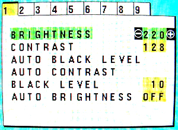
Press the EXIT button to close the BRIGHTNESS menu.
Press the EXIT button to close the Advanced Menu.
| NOTE: | The monitor must be powered OFF and then ON again to exit the Advanced Setup menu mode and enable the OSM menu mode. |
Press the front panel far right button to remove power. Verify the green LED is not illuminated.
Press the front panel far right button to apply power to each monitor. Verify the green LED is illuminated.
Place your hands on the side of the monitor.
Lift or lower the monitor to the desired height. See Illustration 17.
Illustration 17: Raise or Lower LCD Monitor Screen
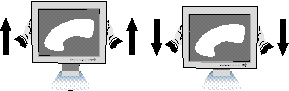
Grasp both sides of the monitor screen with your hands.
Adjust the monitor tilt and swivel as desired. See Illustration 18.
Illustration 18: LCD Monitor Tilt and Swivel

Use this section only if the customer wants the monitor alternately mounted:
Disconnect all cables.
Place your hands on each side of the monitor and lift up to the highest position.
Place monitor face down on a nonabrasive surface. (Place the screen on a 2 inch platform so that the stand is parallel with the surface.) See to Illustration 19.
Illustration 19: Place LCD Monitor Face Down

Remove the stand cover by sliding the top/bottom pieces off the stand. Remove the 4 screws connecting the monitor to the stand and lift off the stand assembly. The monitor is now ready for mounting in an alternate manner. See Illustration 20.
Illustration 20: Remove Stand From Monitor
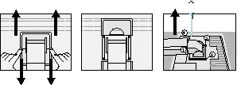
| Please use the attached screws (4 pieces) when mounting. To fulfill the safety requirements the monitor must be mounted to an arm which guaranties the necessary stability under consideration of the weight of the monitor. The LCD monitor shall only be used with an approved arm (e.g. GS mark). | |
| NOTE: | Use only VESA-compatible alternative mounting method. |
Reverse this process to reattach the stand.
No finalization required.